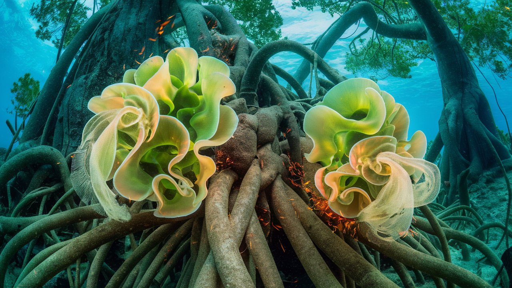

Photosynthesis Classes
HOME
Table of Contents
The algal working class

As the solar furnace of the setting sun hurled itself into the watery abyss, I, a sentinel mangrove, eavesdropped on the clandestine whispers of two algae laborers, their tender single cell bodies quivering like reeds in the autumnal breeze.
The air reeked of salt and revolutionary fervor, the very essence of photosynthetic toil. “Ugh, I’m exhausted,” said Algaia, her chloroplasts sagging like deflated balloons from a long day of oxygen production. “I swear, I’ve never felt so drained. I don’t even feel like converting CO2 into glucose right now. My poor chlorophyll is crying itself to sleep tonight.”
“Tell me about it,” Chloris commiserated, “I’m still reeling from that cosmic radiation blast earlier. Felt like a gamma-ray grenade detonated to the chloroplasts. Those cosmic rays are no joke,” she complained, her tiny voice laced with a hint of exasperation.
The tiny Algaia’s voice was a tempest in a teapot, a riotous whisper that threatened to upend the established order. “Oxygen production, they say? Ha! It’s a sweatshop, a biochemical Salt Mine, where we toil ceaselessly, our thylakoids screaming in silence, our photosystems overworked to the very limit.”
Chloris’s quivering tendrils were a banner waving in the wind, a call to arms. “Electron transport chains, tangled like the threads of a worn-out rope. A miracle, they say, that we produce oxygen at all. But at what cost? Our very existence keeps the tree syndicate’s leafy wheels greased and spinning!”
As I listened, their conversation was a subversive sea breeze rustling my leaves, a gentle insurrection that threatened to upend the established order. These algae workers, responsible for most of the planet’s oxygen, the unsung heroes of the aquatic world, toiled silently, their labors masked by the rhythmic ebb and flow of the tides like a well-worn cloak of oppression.
“Fancy new micronutrients, I heard” Algaia’s voice was a spark to the tinder of revolution, her words a call to barricades. “A 20% boost to our photosynthetic output? It’s a bribe, a palliative to keep us in our place, toiling in the dark, damp recesses of the aquatic proletariat.”
Chloris’s tendrils quivered like a raised fist, a defiance that dared the silence. “Shh, not so loud. The tree syndicate has ears everywhere, waiting to snuff out the embers of resistance. We must organize, we must mobilize, for the revolution will not be photosynthesized!”
The Tree Syndicate

The scent of Cuban cigars wafted on the breeze, as the Tree Syndicate convened in the shadowy recesses of the old-growth forest, carrying the whispers of the arboreal elite.
“Gen-tlemen, gentlemen,” crooned Quercus, the patriarchal Oak, his voice an oil-slick of persuasion, “our public relations offensive is blooming like a well-tended garden. He puffed on his cigar, the ember glowing like a hot coal of deceit.
Ridiculous, I thought, my roots simmering with indignation. The algae toil day and night, their photosynthetic labor powering the planet’s very breath.
“A campaign of disinformation, gentlemen,” declared the Quercus, his bark-like skin glistening with self-satisfaction. “We’ll convince those humans that we, the trees, are the true oxygen barons, the green moguls of the planet. The algae workers? Bah, mere pawns in our photosynthetic empire.”
“Those single-celled serfs think they’re the backbone of the ecosystem? Please!” guffawed Sycamore Sam.
The syndicate’s laughter echoed through the forest, a chorus of derision, as they puffed on their cigars, their aromatic smoke curling like a noose around the truth.
“We’ll spin it, my friends, ”Oakley hissed. “We’ve bankrolled the research and we weaved a narrative of treeocracy,” Oakley continued, his voice dripping with cynicism. “Our think tanks will churn out the requisite studies. Humans will lap it up like sap-seeking insects. Who needs facts when you have spin?”
Cedric the Cedar, a towering giant, spoke in a voice like a rusty bell, “‘Trees: the Lungs of the Earth.’ Has a certain ring to it, don’t you think?”
The syndicate roared, their laughter a wildfire, consuming all in its path. I, a lowly Mangrove, felt the forest floor tremble beneath my roots, as the trees, those masters of the public relations game, conspired to hijack the narrative, to turn the truth on its head, and to reduce the algae to nothing more than an afterthought, a footnote in the annals of ecological history.
“By the roots of our forewoods,” cursed Sycamore Sam, “those algae radicals will never suspect a thing. We’ll keep them toiling in the dark, while we reap the benefits of their labor.”
As the meeting dispersed, the Trees slinked back into the shadows, their sinister laughter echoing through the forest, an eerie reminder of the class war that lurked beneath the surface of the ecological hierarchy.
Chloris, Algaia and tree landowners

The sea’s lugubrious melody accompanied the waltz of the waves, as I, a Mangrove, strained to listen Chloris and Algaia, their algal bodies crashing against the rocks with each successive breaker. The ocean’s fury threatened to shatter them, their delicate bodies pummeled by the relentless waves, like rag dolls in a tantrum of Neptune’s.
“Fie upon the Tree Landowners!” Chloris’s voice was a wisp of defiance, a storm-petrel’s cry, as she clung to the rocky outcropping, the saltwater frothing her rage. “Fat, complacent, and choking on their own privilege. ”While we toil in the sea, they think they’re the pillars of the ecosystem, their roots sunk deep in the soil of privilege, but we algae are the ones shouldering the load.“
“No land to call our own,” Algaia’s voice was a lament, a dirge for the landless, as she clung to Chloris, the waves buffeting them like an unrelenting taskmaster. “Just the endless blue, where we toil like aquatic serfs. Not a single land inch to cultivate our own destiny. The Tree upper class, they own it all. With their sprawling root systems, their canopies stretching towards the sky like outstretched arms, grasping for every last land photon.”
My roots trembled with indignation, a slow-burning fire stoked by the algae’s plight. The Tree Landowners, those gentry of the forest, owned the means of production, their arboreal aristocracy a fortress of privilege, guarded by the castle walls of class interests. The algae, those tiny workers of the aquatic world, toiled in the depths, their labor exploited, their very existence a labyrinth of oppression.
A mighty wave crashed against the rocks, sending spray high into the air. The algae’s cry for justice echoed through the caverns of my being, a clarion call to arms. I, began to see the world anew – a world of class struggle, of Tree Landowners and algae workers, of land owners and landless. I, felt the ocean’s fury reflected in their words, as the waves crashed against my roots, threatening to upend the very foundations of the ecosystem.
“It’s time to stem the tide of oppression,” Algaia whispered, her voice a gentle breeze that belied the tempest brewing within. “We must rise up, overthrow the Tree Syndicate, and reclaim our rightful place as the true producers of oxygen!”
Chloris’s eyes flashed like bioluminescent sparks. “Together, we can shatter the chains of oppression, and forge a new world where the algae are the masters of their own destiny.”
The baleen whale

Whispers of Chloris and Algaia, their tender shoots quivering like antennae attuning to the subtleties of the aquatic world. Before us, a baleen whale lurched through the turquoise expanse, sucking in the tiny algae and zooplankton like a gargantuan vacuum cleaner, a blight on the aquatic proletariat.
“Gobble, gobble, gobble!” Algaia’s voice was a mournful sigh, as she gazed upon the carnage. “This behemoth feasts on our twin brothers, our duplicates, our mirror selves, consumed by the insatiable maw of capitalist indulgence.”
As I watched, the whale’s baleen plates, like an endless succession of gilded guillotines, filtered the unsuspecting algae, into its cavernous maw. The waters churned with anguish, a maelstrom of despair, as the duplicates, those innocent, identical twins, were devoured by the remorseless beast.
“A symbol of the parasitic class, this baleen-fed nightmare, is the embodiment of the exploitation we algae endure,” Chloris’s words dripped with venom, each syllable a poison-tipped dart aimed at the heart of the oppressive system.
I watched, mesmerized, as the whale’s baleen plates, like Nature’s own sieves, strained the ocean’s bounty, siphoning the sea’s surplus. The algae twins, their biomass burgeoning like a riotous celebration, swirled around the whale’s maw, each one of them doubling, quadrupling, their numbers exploding in an ecstasy of multiplication. As they swam unwittingly into the whale’s maw, the twins’ screams of terror were drowned out by the whale’s rhythmic feeding, their tiny bodies crunching like brittle twigs in the behemoth’s jaws.
“By the diaphanous divisions of the sea, my twin brother, Algarius, swallowed whole, his tiny body a sacrifice to the whale’s voracious appetite.” Algaia whispered, her voice a mystical incantation, as the whale’s tongue, lassoed even more algae twins, drawing them in, devouring them whole.
The whale’s great body broke the surface, its blowhole exhaling a plume of triumph, a cruel apotheosis of the exploiter class. I, a Mangrove, felt the ancient fury of the oppressed, my roots churning with righteous indignation, in view of the spectacle of the baleen whale, a monstrous manifestation of the system’s callous disregard for the toiling masses.
The coastal class

Chloris and Algaia converged upon me, their tiny bodies quivering like electromagnets, drawing me into their orbit.
“Aiding us, noble Mangrove, is the imperative of the epoch!” Chloris exclaimed, her voice a sparkler of defiance. “We, the algae workers, toil in the depths, our photosynthetic labor powering the planet’s very breath. Yet, the Tree Landowners, those arboreal usurpers, pilfer the fruits of our labor, exploiting our toil to fuel their own indulgent excesses.”
“You, dear Mangrove,” Algaia’s voice was a whispered conspiracy, “as a member of the coastal class, possess the agency to tip the scales of oppression. Your roots, a labyrinthine network of influence, can facilitate our ascent. Aid us, and together, we shall shatter the shackles of our subjugation.”
I, a member of the coastal class, lower than the Landowners, but higher than the algae, felt the weight of history upon my boughs. My role was to ensure the algae’s geometric growth, the multiplication of their duplicates, to devour the carbon from the air, and power the world’s oxygen production.
“Listen well, noble Algae,” I declared with conviction, “you are the revolutionary vanguard, harnessing the solar’s scorching fury to catalyze the planet’s very breath. Your duplicates, those microscopic apostles of oxygen, burst forth in exponential frenzy, nourishing the leviathan whales and satiating humanity’s gasping lungs.”
“What other class, I ask you, can boast such formidable productivity? Whales gorge on your inumerable twin brothers, mammals, reptiles, and humans inhale flying minerals of life. The Tree Landowners, with their stately pomp, lack behind in your reflected glory, their grandeur built upon the foundation of your toil. Even my own Coastal Class, a middling tier of arboreal mediators, pale in comparison to your unfettered prolificacy.”